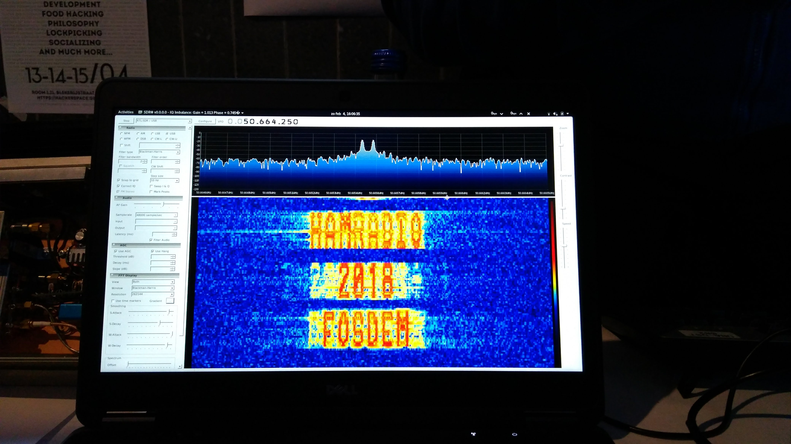

Fosdem 2018
Going to FOSDEM is always somewhat of a reality check. You see how much you stay in your silo at work, how few women there are in our sector and how small the campus has gotten over the last few years. Meeting old colleagues and learning new things always bring me back however.
There is never enough time to visit all the talks you want to go to. FOSDEM is a week worth of seminars condensed into 1 weekend.
Day 1
I attended a few talks today. The most interesting ones where:
- How to keep your embedded linux device up and running
- GStreamer talks
- Igniting the open hardware ecosystem with RISC-V
While the actual application of the first talk remains to be seen, they did apply an interesting way of working. The concepts of 1 domain, the server world, were applied to another, the embedded domain. Some tweaking was required as you do not have the same amount of resources on an embedded device.
I devoted a seperate post to to the gstreamer talks as this was too much information to add here.
RISC-V, the third talk in the list, is an open source hardware project. 10 years ago this would be unthinkable. The presentation they did was running on a system with their chip on it. Very impressive.
There were some other talks i went to. I will not go into detail about them however. I have added quite a few items to my need-to-read-about list.
| Concept | Description |
|---|---|
| muxpi | a remote controllable device to do embedded testing |
| Conan | a C/C++ package manager for developers |
| RTL-SDR | Cheap SDR for hobbyists |
| syslog-ng | syslog on steroids |
| mqtt | Lightweight messaging protocol |
| Pagekite | Network Tunneling |
| ROP | Return oriented programming |
The degeneration of the word embedded is rampant. More and more speakers are (ab)using the term 'embedded' to lure in more attendants.
Day 2
During this day i was responsible for the video stream in the IoT devroom. Sadly the second to last speaker was unable to make it, causing the last talk to be nearly empty. On the demo tables there was a group of people from HAMRADIO showcasing an interesting SDR waterfall:

After cleaning the devroom there was still time to attend one last talk. This room was packed. Meltdown and spectre are big news after all.